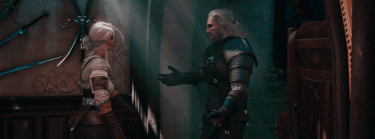

Игра в стиле тёмного фэнтези, мир которой основан на славянской мифологии, повествует о ведьмаке Геральте из Ривии, охотнике на чудовищ, чья приёмная дочь Цири находится в опасности, будучи преследуемой Дикой Охотой загадочной потусторонней силой, тайна которой раскрывается по ходу игры. Многие детали сюжета отсылают к книгам, написанным Сапковским, но сюжет остаётся связанным с первыми двумя частями и подводит птог трилогии, начатой первой игрой, вышедшей восемью годами ранее. В отличие от предыдущих игр. действие «Ведьмака 3» происходит в открытом мире и фокусируется на использовании боевых и детективных навыков Геральта для выполнения заказов и изучения окружающей среды.
